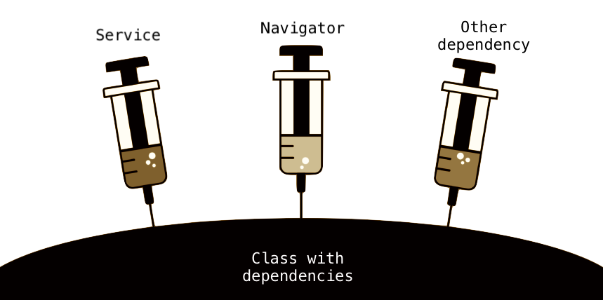
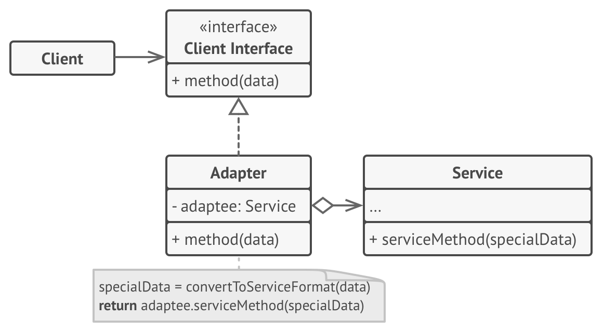
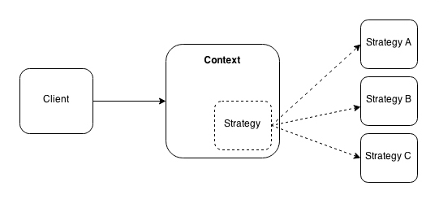
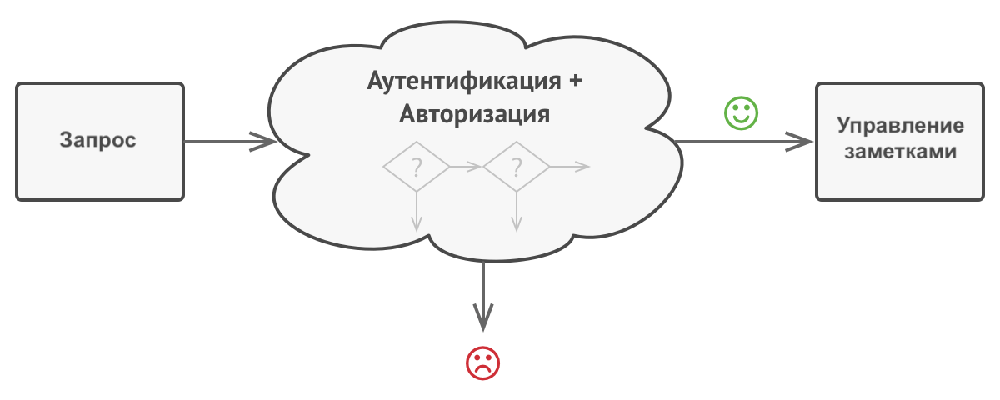
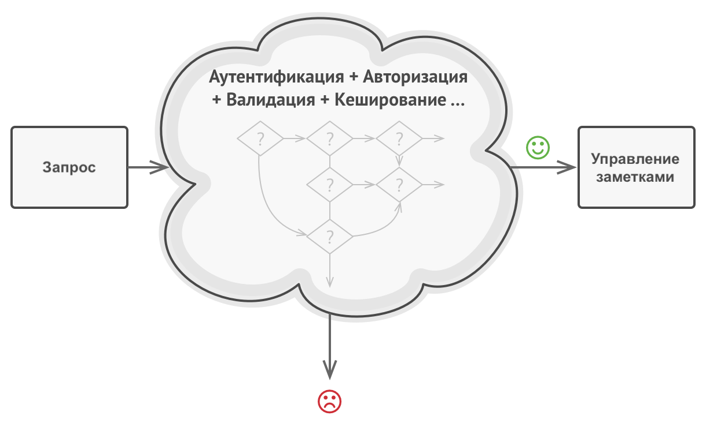
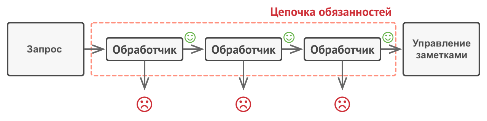

Существует лишь одна причина, приводящая к изменению класса
interface IUser {
id: number;
name: string;
}
class UserController {
getUserInfo(id: number): string {
const user = this.getUserFromDb(id);
return this.formatToHtml(user);
}
protected getUserFromDb(id: number): IUser {
// SELECT id, name FROM users WHERE users.id = ${id};
return { id: 1, name: 'Martin' };
}
protected formatToHtml(user: IUser): string {
return `Name: ${user.name}
`;
}
}
class UserRepository {
getUserById(id: number): IUser {
// SELECT id, name FROM users WHERE users.id = ${id};
return { id: 1, name: 'Martin' };
}
}
class UserFormatter {
formatToHtml(user: IUser): string {
return `Name: ${user.name}
`;
}
}
class UserController {
protected repository = new UserRepository();
protected formatter = new UserFormatter();
getUserInfo(id: number): string {
const user = this.repository.getUserById(id);
return this.formatter.formatToHtml(user);
}
}
Программные сущности должны быть открыты для расширения, но закрыты для модификации
interface IUser {
id: number;
name: string;
}
interface IRegisteredUser extends IUser {
email: string;
}
class UserFormatter {
formatToHtml(user: IUser | IRegisteredUser): string {
if ('email' in user) {
return `
Name: ${user.name}
Email: ${user.email}
`;
}
return `Name: ${user.name}
`;
}
}
interface IUser {
id: number;
name: string;
getDisplayFields(): string[];
}
interface IRegisteredUser extends IUser {
email: string;
}
class UserFormatter {
formatToHtml(user: IUser): string {
return user
.getDisplayFields()
.map(field => `${field}: ${user[field]}
`)
.join('
');
}
}
Функции, которые используют базовый тип, должны иметь возможность использовать подтипы базового типа, не зная об этом
abstract class BaseUserRepository {
abstract getById(id: number): IUser;
}
class MockUserRepository extends BaseUserRepository {
getById(id: number): IUser {
return { id, name: 'Robert' };
}
}
class FileUserRepository extends BaseUserRepository {
getById(id: number): IUser {
const fileContent = fs.readFileSync('users.json', 'utf-8');
const user = JSON.parse(fileContent)[id];
return user;
}
}
// ...
class UserController {
protected repository: BaseUserRepository;
constructor() {
switch (process.env.NODE_ENV) {
case 'development':
this.repository = new FileUserRepository();
break;
case 'test':
this.repository = new MockUserRepository();
break;
default:
this.repository = new DbUserRepository();
}
}
getUserInfo(id: number): IUser {
return this.repository.getById(id);
}
}
Нельзя заставлять клиента реализовать интерфейс, которым он не пользуется
interface IRepository<T> {
findAll(): Promise<T[]>;
findOne(id: string): Promise<T>;
create(item: T): Promise<boolean>;
delete(id: string): Promise<boolean>;
update(id: string, item: T): Promise<boolean>;
}
class MockUserRepository implements IRepository<IUser> {
findAll(): Promise<IUser[]> {
return Promise.resolve([{ id: 1, name: 'Sergey' }, { id: 2, name: 'Maxim' }]);
}
// ...
update(id: string, item: IUser): Promise<boolean> {
throw new Error('Method not implemented.');
}
}
interface IReadableRepository<T> {
findAll(): Promise<T[]>;
findOne(id: string): Promise<T>;
}
interface IWritableRepository<T> {
create(item: T): Promise<boolean>;
delete(id: string): Promise<boolean>;
update(id: string, item: T): Promise<boolean>;
}
class MockUserRepository implements IReadableRepository<IUser> {
findAll(): Promise<IUser[]> {
return Promise.resolve([{ id: 1, name: 'Sergey' }, { id: 2, name: 'Maxim' }]);
}
findOne(id: string): Promise<IUser> {
return Promise.resolve({ id: 3, name: 'Igor' });
}
}
Высокоуровневые модули не должны зависеть от низкоуровневых. Оба вида модулей должны зависеть от абстракций.
Абстракции не должны зависеть от подробностей. Подробности должны зависеть от абстракций.
class MySQLConnection {
query(sql: string): object[] {
// Execute SQL query
return [];
}
}
class DbUserRepository {
protected dbConnection: MySQLConnection;
constructor(dbConnection: MySQLConnection) {
this.dbConnection = dbConnection;
}
findAll() {
return this.dbConnection.query('SELECT * FROM users;');
}
}
interface IConnection {
query(sql: string): object[];
}
class MySQLConnection implements IConnection {
query(sql: string): object[] {
// Execute SQL query written in MySQL dialect
return [];
}
}
class PostgreSQLConnection implements IConnection {
query(sql: string): object[] {
// Execute SQL query written in PostgreSQL dialect
return [];
}
}
class DbUserRepository {
protected dbConnection: IConnection;
constructor(dbConnection: IConnection) {
this.dbConnection = dbConnection;
}
findAll() {
return this.dbConnection.query('SELECT * FROM users;');
}
}
const userRepositoryMySQL = new DbUserRepository(
new MySQLConnection()
);
const userRepositoryPostgreSQL = new DbUserRepository(
new PostgreSQLConnection()
);

Это типичные способы решения часто встречающихся проблем при проектировании программ
Это шаблоны, которые абстрагируют процесс создания объектов классов
Это объект или функция для создания других объектов
interface IStorage {
get(key: string): string;
set(key: string, value: string): void;
}
enum StorageType {
Redis,
InMemory
}
class RedisStorage implements IStorage {
get(key: string): string { /* ... */ }
set(key: string, value: string): void { /* ... */ }
}
class InMemoryStorage implements IStorage {
get(key: string): string { /* ... */ }
set(key: string, value: string): void { /* ... */ }
}
function createStorage(type: StorageType): IStorage {
switch (type) {
case StorageType.Redis:
return new RedisStorage();
case StorageType.InMemory:
return new InMemoryStorage();
default:
throw new Error('Invalid storage type');
}
}
Это шаблоны, которые отвечают за построение удобных в поддержке иерархий классов
Это шаблон, который позволяет объектам с несовместимыми интерфейсами работать вместе

interface ILogRecord {
level: string;
timestamp: number;
message: string;
}
class LoggerService {
sendRecord(record: ILogRecord) {
console.log(record);
}
}
interface ILogger {
log(message: string): void;
}
class Client {
protected logger: ILogger;
constructor(logger: ILogger) {
this.logger = logger;
}
doSomething() {
this.logger.log('DEBUG 1556523689224 Client works fine');
}
}
class ServiceAdapter implements ILogger {
protected service = new LoggerService();
log(message: string): void {
const match = message.match(/(\w+) (\w+) (.*)/);
if (match) {
this.service.sendRecord({
level: match[1],
timestamp: Number(match[2]),
message: match[3]
});
}
}
}
Это шаблоны, определяющие алгоритмы и способы реализации взаимодействия различных объектов и классов
Это шаблон, который определяет семейство схожих алгоритмов, инкапсулирует каждый из них и обеспечивает их взаимозаменяемость

interface IAuthStrategy {
authenticate(): void;
}
class TokenAuthStrategy implements IAuthStrategy {
authenticate() {
console.log('Authenticating using TokenAuthStrategy');
}
}
class CookiesAuthStrategy implements IAuthStrategy {
authenticate() {
console.log('Authenticating using CookiesAuthStrategy');
}
}
class Passport {
protected strategy: IAuthStrategy | null = null;
use(strategy: IAuthStrategy) {
this.strategy = strategy;
return this;
}
authenticate() {
if (this.strategy === null) {
throw new Error('No authentication strategy set');
}
this.strategy.authenticate();
}
}
// Setup
const passport = new Passport();
const cookiesStrategy = new CookiesAuthStrategy();
passport.use(cookiesStrategy);
// Usage
passport.authenticate();
Шаблон проектирования, который позволяет избежать жёсткой привязки отправителя запроса к получателю, позволяя нескольким объектам обработать запрос<


